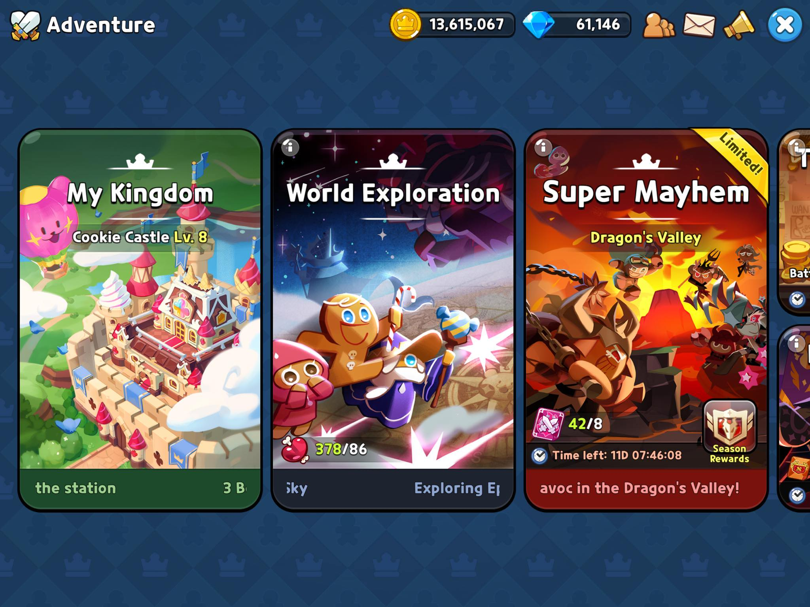
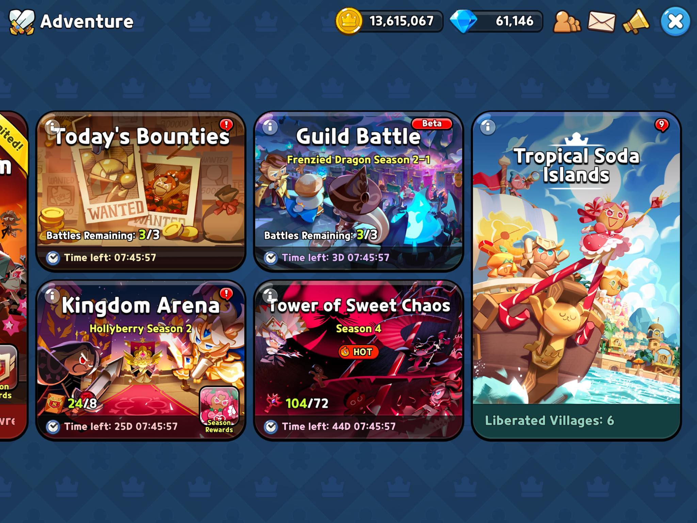

Assuming you have already gone through the tutorial, let's get into the different buttons on the sides of your screen!
Profile Corner - Tap on this to see your kingdom name, level and other stats about your account.
You can also change your profile picture by joining events and meeting new cookies!
Stamina Jelly Counter - This shows how much stamina jellies you have. This is used for story and dark mode levels.
Coins - This shows how much coins you have, you can earn it through different ways like finishing quests and
finishing levels. This is primarily used for building and decorating your kingdom.
Crystals - This shows how many crystals you have. It is mainly used for Gacha and kingdom decorating,
but it is also the currency for other offers.
Friends, Mail, News buttons - These are the buttons you press to see your Guild, your friendslist and the world chat.
The mail is where you can receive gifts from the game or from your friends. The news buttons shows the newest updates added.
Kingdom Pass - This button gives you missions to complete to get every Season. A Season is around 30 days, and you
can get more rewards if you buy the season's kingdom pass.
Tasks - These are different tasks that help you level up your kingdom. You can gain exp, coins and other rewards
for completing them.
Adventure - This button lets you play from different gamemodes, some are time-limited
and some are only unlocked as you expand your kingdom.
Cookie Roster - Shows you the cookie list, and the cookies you have met. You can level cookies up and make them stronger.
Storage - Shows you your itema that you have collected from buildings.
Gacha - This is where you can meet cookies and find treasures that aid in battles. As of the halloween update,
a costume gacha is added, where you can change the clothes of your cookies to get into the spooky spirit!
Kingdom Affairs - This shows you the different things in your kingdom, these are unlocked by expanding your kingdom.
Build and Layout - This is for buying and creating buildings that make materials and decor that make your kingdom
look nice.
Actions - Shows you what your cookies are doing.
Shop and Events - The shop offers many deals; some of which need real money. The events button shows you the different events.
Speaking of gamemodes, the following is a list of different gamemodes you can play.


My Kingdom - This shows you your main kingdom.
World Adventure - This is the main gamemode which you play to find out the main story of the game.
Super Mayhem - This is a limited gamemode which is similar to the Kingdom Arena but in order to win, you
must fight three teams of another player instead of the usual one.
Today's Bounties - These are bosses which you defeat in order to gain skill powders which are used to
make your cookies stronger. These cycle through a weekly basis.
Kingdom Arena - The PVP gamemode of Cookie Run Kingdom. Fight other player's teams and win different rewards.
Guild Battle - Defeat dragons with your guildmates! You can only fight the dragon thrice a day.
Tower of Sweet Chaos - Learn more about the plans of Dark Enchantress Cookie with this gamemode. Offers both
PVE and player versus a team of cookies selected by the game.
Tropical Soda Islands - Defeat pirates and go on an adventure with Princess and Knight Cookie through the seas!
It may all seem intimidating at first, but you'll be able to navigate through the game with ease once you get used to it!
Click on the CGK icon on the top left to go back to the menu!